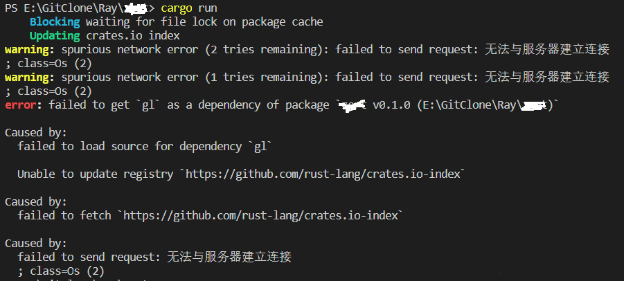

前因
在从朋友那儿clone一份rust代码之后，cargo run竟然出错了，一时半会儿也没解决，以为问题不大就没关注，结果问题也同样出现在了我自己的代码身上

(出错详情)解决
这是在更换镜像源没法解决之后，无意间找搜到的解决方案
以下解决方案来自stackoverflow 先检查代理
netsh winhttp show proxy
如果有代理的话进行重置
netsh winhttp reset proxy
后记
残留的代理是之前为编译其他项目而留下的，造成了不小麻烦，慎用命令行直接设置的代理